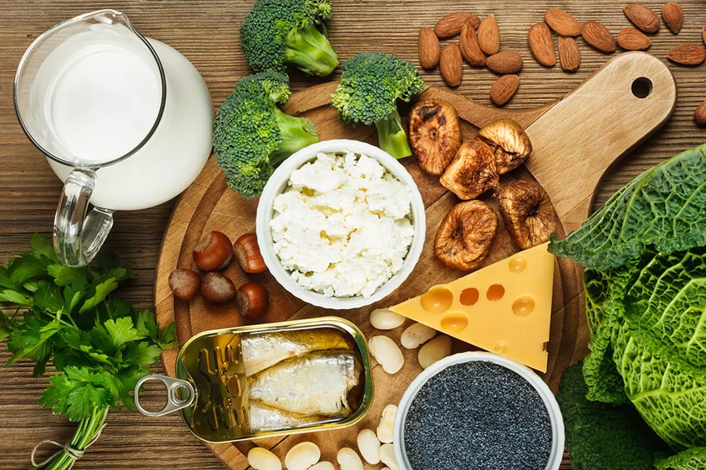
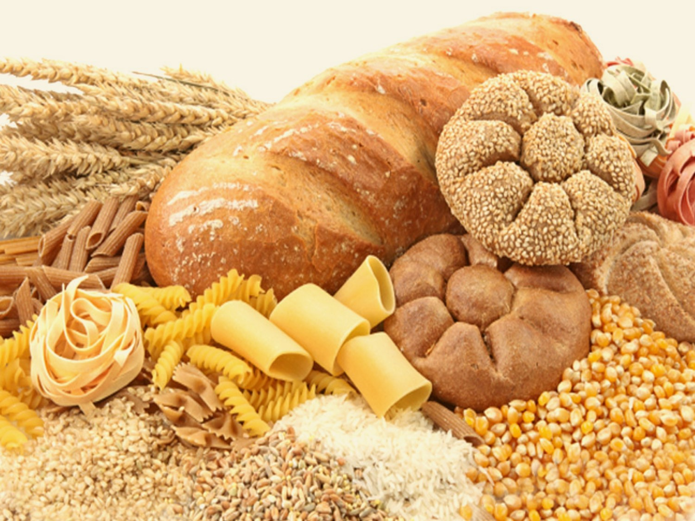
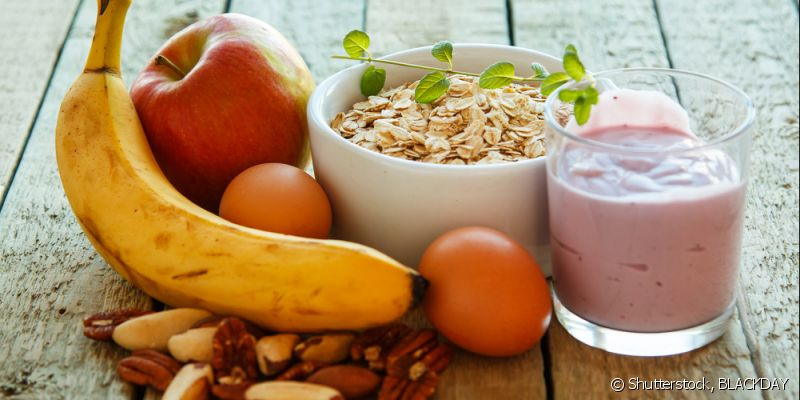

Os carboidratos servem como nosso fonte de energia, por isso, quando ha carência desses nutrientes em nosso corpo sentimos fraqueza e irritabilidade. Além disso, são os responsáveis pela liberação da glicose e por fazerem a manutenção metabólica glicêmica, para que o organismo funcione da melhor forma possível.
LOGO
Carboidratos
A importância da ingestão deles em sua dieta

Alimentos que possuem Monossacarídeos
Esse grupo é importante pois funciona como principal fonte de energia para o organismo. Um exemplo da importância da ingestão de monossacarídeos é a glicose, que auxilia na respiração celular, no funcionamento dos neurônios e na liberação de energia para o organismo. A frutose, quando ingerida, se transforma em glicose, proporcionando energia para o organismo. Por isso é recomendada sua ingestão antes e depois do treino, já que ajuda a fornecer energia e a combater a fadiga. Além da frutose, temos a galactose que também se converte em glicose e funciona como importante fonte de energia. É importante lembrar que, embora ingerir alimentos com monossacarídeos seja benéfico para o organismo, seu consumo em excesso pode causar problemas como...
Alimentos que possuem Oligossacarídeos
Oligossacarídeos são estruturas formadas pela associação de duas a dez moléculas monossacarídeos, através de ligações covalentes. São solúveis em água e apresentam um sabor adocicado. Sua ingestão causa controvérsias, pois causam reações boas e ruins ao sistema digestivo humano. O motivo dessas controvérsias é que, por um lado, eles possuem papel terapêutico na digestão, estimulando e suprimindo determinados grupos de bactérias encontradas no corpo. A ingestão de alimentos ricos nesses carboidratos ajuda a eliminar bactérias ruins e promove o acúmulo de bactérias úteis. Por outro lado, nosso corpo não os decompõe de forma adequada, o que causa problemas para o cólon...


Alimentos que possuem Polissacarídeos
Esse grupo é importante pois funciona como reserva de energia e estruturação. Os polissacarídeos mais importantes no quesito reserva energética são o amido e o glicogénio, que são as reservas de energia de plantas e animais, respectivamente. O amido é importante em nosso organismo pois atua como reserva energética. O glicogénio é principalmente armazenado fígado, e em menor quantidade no músculo esquelético. Interfere na regulação da glicemia - porcentagem de glicose no sangue. O polissacarídeo estrutural mais importante é a celulose, sendo a principal base estrutural das plantas. A celulose não pode ser digerida pelo nosso organismo...
Receitas com carboidratos
